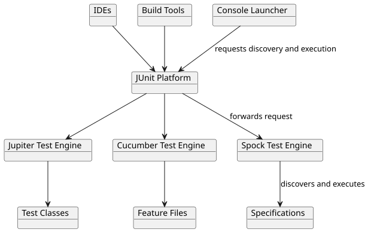

JUnit Platform Launcher API
One of the prominent goals of the JUnit Platform is to make the interface between JUnit and its programmatic clients – build tools and IDEs – more powerful and stable. The purpose is to decouple the internals of discovering and executing tests from all the filtering and configuration that is necessary from the outside.
JUnit Platform provides a Launcher API that can be used to discover, filter, and execute
tests. Moreover, third party test libraries – like Spock or Cucumber – can plug into the
JUnit Platform’s launching infrastructure by providing a custom
TestEngine.

The launcher API is in the junit-platform-launcher module.
An example consumer of the launcher API is the ConsoleLauncher in the
junit-platform-console project.
Discovering Tests
Having test discovery as a dedicated feature of the platform frees IDEs and build tools from most of the difficulties they had to go through to identify test classes and test methods in previous versions of JUnit.
Usage Example:
import static org.junit.platform.engine.discovery.ClassNameFilter.includeClassNamePatterns;
import static org.junit.platform.engine.discovery.DiscoverySelectors.selectClass;
import static org.junit.platform.engine.discovery.DiscoverySelectors.selectPackage;
import static org.junit.platform.launcher.core.LauncherDiscoveryRequestBuilder.discoveryRequest;
import org.junit.platform.launcher.LauncherDiscoveryRequest;
import org.junit.platform.launcher.LauncherSession;
import org.junit.platform.launcher.TestPlan;
import org.junit.platform.launcher.core.LauncherFactory;LauncherDiscoveryRequest discoveryRequest = discoveryRequest()
.selectors(
selectPackage("com.example.mytests"),
selectClass(MyTestClass.class)
)
.filters(
includeClassNamePatterns(".*Tests")
)
.build();
try (LauncherSession session = LauncherFactory.openSession()) {
TestPlan testPlan = session.getLauncher().discover(discoveryRequest);
// ... discover additional test plans or execute tests
}You can select classes, methods, and all classes in a package or even search for all tests in the class-path or module-path. Discovery takes place across all participating test engines.
The resulting TestPlan is a hierarchical (and read-only) description of all engines,
classes, and test methods that fit the LauncherDiscoveryRequest. The client can
traverse the tree, retrieve details about a node, and get a link to the original source
(like class, method, or file position). Every node in the test plan has a unique ID
that can be used to invoke a particular test or group of tests.
Clients can register one or more LauncherDiscoveryListener implementations via the
LauncherDiscoveryRequestBuilder to gain insight into events that occur during test
discovery. By default, the builder registers an "abort on failure" listener that aborts
test discovery after the first discovery failure is encountered. The default
LauncherDiscoveryListener can be changed via the
junit.platform.discovery.listener.default configuration
parameter.
Executing Tests
To execute tests, clients can use the same LauncherDiscoveryRequest as in the discovery
phase or create a new request. Test progress and reporting can be achieved by registering
one or more TestExecutionListener implementations with the Launcher as in the
following example.
LauncherDiscoveryRequest discoveryRequest = LauncherDiscoveryRequestBuilder.request()
.selectors(
selectPackage("com.example.mytests"),
selectClass(MyTestClass.class)
)
.filters(
includeClassNamePatterns(".*Tests")
)
.build();
SummaryGeneratingListener listener = new SummaryGeneratingListener();
try (LauncherSession session = LauncherFactory.openSession()) {
Launcher launcher = session.getLauncher();
// Register one ore more listeners of your choice.
launcher.registerTestExecutionListeners(listener);
// Discover tests and build a test plan.
TestPlan testPlan = launcher.discover(discoveryRequest);
// Execute the test plan.
launcher.execute(testPlan);
// Alternatively, execute the discovery request directly.
launcher.execute(discoveryRequest);
}
TestExecutionSummary summary = listener.getSummary();
// Do something with the summary...There is no return value for the execute() method, but you can use a
TestExecutionListener to aggregate the results. For examples see the
SummaryGeneratingListener, LegacyXmlReportGeneratingListener, and
UniqueIdTrackingListener.
All TestExecutionListener methods are called sequentially. Methods for start
events are called in registration order while methods for finish events are called in
reverse order.
Test case execution won’t start before all executionStarted calls have returned.
|
Registering a TestEngine
See the dedicated section on TestEngine registration for details.
Registering a PostDiscoveryFilter
In addition to specifying post-discovery filters as part of a LauncherDiscoveryRequest
passed to the Launcher API, PostDiscoveryFilter implementations will be discovered
at runtime via Java’s ServiceLoader mechanism and automatically applied by the
Launcher in addition to those that are part of the request.
For example, an example.CustomTagFilter class implementing PostDiscoveryFilter and
declared within the /META-INF/services/org.junit.platform.launcher.PostDiscoveryFilter
file is loaded and applied automatically.
Registering a LauncherSessionListener
Registered implementations of LauncherSessionListener are notified when a
LauncherSession is opened (before a Launcher first discovers and executes tests)
and closed (when no more tests will be discovered or executed). They can be registered
programmatically via the LauncherConfig that is passed to the LauncherFactory, or
they can be discovered at runtime via Java’s ServiceLoader mechanism and automatically
registered with LauncherSession (unless automatic registration is disabled.)
Tool Support
The following build tools and IDEs are known to provide full support for LauncherSession:
-
Gradle 4.6 and later
-
Maven Surefire/Failsafe 3.0.0-M6 and later
-
IntelliJ IDEA 2017.3 and later
Other tools might also work but have not been tested explicitly.
Example Usage
A LauncherSessionListener is well suited for implementing once-per-JVM setup/teardown
behavior since it’s called before the first and after the last test in a launcher session,
respectively. The scope of a launcher session depends on the used IDE or build tool but
usually corresponds to the lifecycle of the test JVM. A custom listener that starts an
HTTP server before executing the first test and stops it after the last test has been
executed, could look like this:
package example.session;
import static java.net.InetAddress.getLoopbackAddress;
import java.io.IOException;
import java.io.UncheckedIOException;
import java.net.InetSocketAddress;
import java.util.concurrent.ExecutorService;
import java.util.concurrent.Executors;
import com.sun.net.httpserver.HttpServer;
import org.junit.platform.engine.support.store.Namespace;
import org.junit.platform.engine.support.store.NamespacedHierarchicalStore;
import org.junit.platform.launcher.LauncherSession;
import org.junit.platform.launcher.LauncherSessionListener;
import org.junit.platform.launcher.TestExecutionListener;
import org.junit.platform.launcher.TestPlan;
public class GlobalSetupTeardownListener implements LauncherSessionListener {
@Override
public void launcherSessionOpened(LauncherSession session) {
// Avoid setup for test discovery by delaying it until tests are about to be executed
session.getLauncher().registerTestExecutionListeners(new TestExecutionListener() {
@Override
public void testPlanExecutionStarted(TestPlan testPlan) {
NamespacedHierarchicalStore<Namespace> store = session.getStore(); (1)
store.computeIfAbsent(Namespace.GLOBAL, "httpServer", key -> { (2)
InetSocketAddress address = new InetSocketAddress(getLoopbackAddress(), 0);
HttpServer server;
try {
server = HttpServer.create(address, 0);
}
catch (IOException e) {
throw new UncheckedIOException("Failed to start HTTP server", e);
}
server.createContext("/test", exchange -> {
exchange.sendResponseHeaders(204, -1);
exchange.close();
});
ExecutorService executorService = Executors.newCachedThreadPool();
server.setExecutor(executorService);
server.start(); (3)
return new CloseableHttpServer(server, executorService);
});
}
});
}
}| 1 | Get the store from the launcher session |
| 2 | Lazily create the HTTP server and put it into the store |
| 3 | Start the HTTP server |
It uses a wrapper class to ensure the server is stopped when the launcher session is closed:
package example.session;
import java.util.concurrent.ExecutorService;
import com.sun.net.httpserver.HttpServer;
public class CloseableHttpServer implements AutoCloseable {
private final HttpServer server;
private final ExecutorService executorService;
CloseableHttpServer(HttpServer server, ExecutorService executorService) {
this.server = server;
this.executorService = executorService;
}
public HttpServer getServer() {
return server;
}
@Override
public void close() { (1)
server.stop(0); (2)
executorService.shutdownNow();
}
}| 1 | The close() method is called when the launcher session is closed |
| 2 | Stop the HTTP server |
This sample uses the HTTP server implementation from the jdk.httpserver module that comes
with the JDK but would work similarly with any other server or resource. In order for the
listener to be picked up by JUnit Platform, you need to register it as a service by adding
a resource file with the following name and contents to your test runtime classpath (e.g.
by adding the file to src/test/resources):
example.session.GlobalSetupTeardownListenerYou can now use the resource from your test:
package example.session;
import static org.junit.jupiter.api.Assertions.assertEquals;
import java.io.IOException;
import java.net.HttpURLConnection;
import java.net.URI;
import java.net.URL;
import com.sun.net.httpserver.HttpServer;
import org.junit.jupiter.api.Test;
import org.junit.jupiter.api.extension.ExtendWith;
import org.junit.jupiter.api.extension.ExtensionContext;
import org.junit.jupiter.api.extension.ParameterContext;
import org.junit.jupiter.api.extension.ParameterResolver;
@ExtendWith(HttpServerParameterResolver.class)
class HttpTests {
@Test
void respondsWith204(HttpServer server) throws IOException {
String host = server.getAddress().getHostString(); (2)
int port = server.getAddress().getPort(); (3)
URL url = URI.create("http://" + host + ":" + port + "/test").toURL();
HttpURLConnection connection = (HttpURLConnection) url.openConnection();
connection.setRequestMethod("GET");
int responseCode = connection.getResponseCode(); (4)
assertEquals(204, responseCode); (5)
}
}
class HttpServerParameterResolver implements ParameterResolver {
@Override
public boolean supportsParameter(ParameterContext parameterContext, ExtensionContext extensionContext) {
return HttpServer.class.equals(parameterContext.getParameter().getType());
}
@Override
public Object resolveParameter(ParameterContext parameterContext, ExtensionContext extensionContext) {
return extensionContext
.getStore(ExtensionContext.Namespace.GLOBAL)
.get("httpServer", CloseableHttpServer.class) (1)
.getServer();
}
}| 1 | Retrieve the HTTP server instance from the store |
| 2 | Get the host string directly from the injected HTTP server instance |
| 3 | Get the port number directly from the injected HTTP server instance |
| 4 | Send a request to the server |
| 5 | Check the status code of the response |
Registering a LauncherInterceptor
In order to intercept the creation of instances of Launcher and
LauncherSessionListener and calls to the discover and execute methods of the
former, clients can register custom implementations of LauncherInterceptor via Java’s
ServiceLoader mechanism by setting the
junit.platform.launcher.interceptors.enabled configuration parameter to true.
|
Since interceptors are registered before the test run starts, the
|
A typical use case is to create a custom interceptor to replace the ClassLoader used by
the JUnit Platform to load test classes and engine implementations.
import java.io.IOException;
import java.io.UncheckedIOException;
import java.net.URI;
import java.net.URL;
import java.net.URLClassLoader;
import org.junit.platform.launcher.LauncherInterceptor;
public class CustomLauncherInterceptor implements LauncherInterceptor {
private final URLClassLoader customClassLoader;
public CustomLauncherInterceptor() throws Exception {
ClassLoader parent = Thread.currentThread().getContextClassLoader();
customClassLoader = new URLClassLoader(new URL[] { URI.create("some.jar").toURL() }, parent);
}
@Override
public <T> T intercept(Invocation<T> invocation) {
Thread currentThread = Thread.currentThread();
ClassLoader originalClassLoader = currentThread.getContextClassLoader();
currentThread.setContextClassLoader(customClassLoader);
try {
return invocation.proceed();
}
finally {
currentThread.setContextClassLoader(originalClassLoader);
}
}
@Override
public void close() {
try {
customClassLoader.close();
}
catch (IOException e) {
throw new UncheckedIOException("Failed to close custom class loader", e);
}
}
}Registering a LauncherDiscoveryListener
In addition to specifying discovery listeners as part of a LauncherDiscoveryRequest or
registering them programmatically via the Launcher API, custom
LauncherDiscoveryListener implementations can be discovered at runtime via Java’s
ServiceLoader mechanism and automatically registered with the Launcher created via
the LauncherFactory.
For example, an example.CustomLauncherDiscoveryListener class implementing
LauncherDiscoveryListener and declared within the
/META-INF/services/org.junit.platform.launcher.LauncherDiscoveryListener file is loaded
and registered automatically.
Registering a TestExecutionListener
In addition to the public Launcher API method for registering test execution listeners
programmatically, custom TestExecutionListener implementations will be discovered at
runtime via Java’s ServiceLoader mechanism and automatically registered with the
Launcher created via the LauncherFactory.
For example, an example.CustomTestExecutionListener class implementing
TestExecutionListener and declared within the
/META-INF/services/org.junit.platform.launcher.TestExecutionListener file is loaded and
registered automatically.
Configuring a TestExecutionListener
When a TestExecutionListener is registered programmatically via the Launcher API,
the listener may provide programmatic ways for it to be configured — for example, via its
constructor, setter methods, etc. However, when a TestExecutionListener is registered
automatically via Java’s ServiceLoader mechanism (see
Registering a TestExecutionListener), there is no way for the user to directly configure the
listener. In such cases, the author of a TestExecutionListener may choose to make the
listener configurable via configuration parameters. The
listener can then access the configuration parameters via the TestPlan supplied to the
testPlanExecutionStarted(TestPlan) and testPlanExecutionFinished(TestPlan) callback
methods. See the UniqueIdTrackingListener for an example.
Deactivating a TestExecutionListener
Sometimes it can be useful to run a test suite without certain execution listeners being
active. For example, you might have custom a TestExecutionListener that sends the test
results to an external system for reporting purposes, and while debugging you might not
want these debug results to be reported. To do this, provide a pattern for the
junit.platform.execution.listeners.deactivate configuration parameter to specify which
execution listeners should be deactivated (i.e. not registered) for the current test run.
|
Only listeners registered via the In addition, since execution listeners are registered before the test run starts, the
|
Pattern Matching Syntax
Refer to Pattern Matching Syntax for details.
Configuring the Launcher
If you require fine-grained control over automatic detection and registration of test
engines and listeners, you may create an instance of LauncherConfig and supply that to
the LauncherFactory. Typically, an instance of LauncherConfig is created via the
built-in fluent builder API, as demonstrated in the following example.
LauncherConfig launcherConfig = LauncherConfig.builder()
.enableTestEngineAutoRegistration(false)
.enableLauncherSessionListenerAutoRegistration(false)
.enableLauncherDiscoveryListenerAutoRegistration(false)
.enablePostDiscoveryFilterAutoRegistration(false)
.enableTestExecutionListenerAutoRegistration(false)
.addTestEngines(new CustomTestEngine())
.addLauncherSessionListeners(new CustomLauncherSessionListener())
.addLauncherDiscoveryListeners(new CustomLauncherDiscoveryListener())
.addPostDiscoveryFilters(new CustomPostDiscoveryFilter())
.addTestExecutionListeners(new LegacyXmlReportGeneratingListener(reportsDir, out))
.addTestExecutionListeners(new CustomTestExecutionListener())
.build();
LauncherDiscoveryRequest discoveryRequest = LauncherDiscoveryRequestBuilder.request()
.selectors(selectPackage("com.example.mytests"))
.build();
try (LauncherSession session = LauncherFactory.openSession(launcherConfig)) {
session.getLauncher().execute(discoveryRequest);
}Dry-Run Mode
When running tests via the Launcher API, you can enable dry-run mode by setting the
junit.platform.execution.dryRun.enabled configuration parameter to true. In this mode, the Launcher will not actually
execute any tests but will notify registered TestExecutionListener instances as if all
tests had been skipped and their containers had been successful. This can be useful to
test changes in the configuration of a build or to verify a listener is called as expected
without having to wait for all tests to be executed.
Managing State Across Test Engines
When running tests on the JUnit Platform, multiple test engines may need to access shared
resources. Rather than initializing these resources multiple times, JUnit Platform
provides mechanisms to share state across test engines efficiently. Test engines can use
the Platform’s NamespacedHierarchicalStore API to lazily initialize and share
resources, ensuring they are created only once regardless of execution order. Any resource
that is put into the store and implements AutoCloseable will be closed automatically when
the execution is finished.
The Jupiter engine allows read and write access to such resources via its
Store API.
|
The following example demonstrates two custom test engines sharing a ServerSocket
resource. FirstCustomEngine attempts to retrieve an existing ServerSocket from the
global store or creates a new one if it doesn’t exist:
import static java.net.InetAddress.getLoopbackAddress;
import static org.junit.platform.engine.TestExecutionResult.successful;
import java.io.IOException;
import java.io.UncheckedIOException;
import java.net.ServerSocket;
import org.jspecify.annotations.Nullable;
import org.junit.platform.engine.EngineDiscoveryRequest;
import org.junit.platform.engine.ExecutionRequest;
import org.junit.platform.engine.TestDescriptor;
import org.junit.platform.engine.TestEngine;
import org.junit.platform.engine.UniqueId;
import org.junit.platform.engine.support.descriptor.EngineDescriptor;
import org.junit.platform.engine.support.store.Namespace;
import org.junit.platform.engine.support.store.NamespacedHierarchicalStore;
/**
* First custom test engine implementation.
*/
public class FirstCustomEngine implements TestEngine {
public ServerSocket socket;
@Override
public String getId() {
return "first-custom-test-engine";
}
public ServerSocket getSocket() {
return this.socket;
}
@Override
public TestDescriptor discover(EngineDiscoveryRequest discoveryRequest, UniqueId uniqueId) {
return new EngineDescriptor(uniqueId, "First Custom Test Engine");
}
@Override
public void execute(ExecutionRequest request) {
request.getEngineExecutionListener()
.executionStarted(request.getRootTestDescriptor());
NamespacedHierarchicalStore<Namespace> store = request.getStore();
socket = store.computeIfAbsent(Namespace.GLOBAL, "serverSocket", key -> {
try {
return new ServerSocket(0, 50, getLoopbackAddress());
}
catch (IOException e) {
throw new UncheckedIOException("Failed to start ServerSocket", e);
}
}, ServerSocket.class);
request.getEngineExecutionListener()
.executionFinished(request.getRootTestDescriptor(), successful());
}
}SecondCustomEngine follows the same pattern, ensuring that regardless whether it runs
before or after FirstCustomEngine, it will use the same socket instance:
/**
* Second custom test engine implementation.
*/
public class SecondCustomEngine implements TestEngine {
public ServerSocket socket;
@Override
public String getId() {
return "second-custom-test-engine";
}
public ServerSocket getSocket() {
return this.socket;
}
@Override
public TestDescriptor discover(EngineDiscoveryRequest discoveryRequest, UniqueId uniqueId) {
return new EngineDescriptor(uniqueId, "Second Custom Test Engine");
}
@Override
public void execute(ExecutionRequest request) {
request.getEngineExecutionListener()
.executionStarted(request.getRootTestDescriptor());
NamespacedHierarchicalStore<Namespace> store = request.getStore();
socket = store.computeIfAbsent(Namespace.GLOBAL, "serverSocket", key -> {
try {
return new ServerSocket(0, 50, getLoopbackAddress());
}
catch (IOException e) {
throw new UncheckedIOException("Failed to start ServerSocket", e);
}
}, ServerSocket.class);
request.getEngineExecutionListener()
.executionFinished(request.getRootTestDescriptor(), successful());
}
}
In this case, the ServerSocket can be stored directly in the global store while
ensuring since it gets closed because it implements AutoCloseable. If you need to use a
type that does not do so, you can wrap it in a custom class that implements
AutoCloseable and delegates to the original type. This is important to ensure that the
resource is closed properly when the test run is finished.
|
For illustration, the following test verifies that both engines are sharing the same
ServerSocket instance and that it’s closed after Launcher.execute() returns:
@Test
void runBothCustomEnginesTest() {
FirstCustomEngine firstCustomEngine = new FirstCustomEngine();
SecondCustomEngine secondCustomEngine = new SecondCustomEngine();
LauncherConfig launcherConfig = LauncherConfig.builder()
.addTestEngines(firstCustomEngine, secondCustomEngine)
.enableTestEngineAutoRegistration(false)
.build();
LauncherDiscoveryRequest discoveryRequest = discoveryRequest()
.selectors(selectPackage("com.example.mytests"))
.build();
Launcher launcher = LauncherFactory.create(launcherConfig);
launcher.execute(discoveryRequest);
assertSame(firstCustomEngine.getSocket(), secondCustomEngine.getSocket());
assertTrue(firstCustomEngine.getSocket().isClosed(), "socket should be closed");
}By using the Platform’s NamespacedHierarchicalStore API with shared namespaces in this
way, test engines can coordinate resource creation and sharing without direct dependencies
between them.
Alternatively, it’s possible to inject resources into test engines by
registering a LauncherSessionListener.
Cancelling a Running Test Execution
The launcher API provides the ability to cancel a running test execution mid-flight while
allowing engines to clean up resources. To request an execution to be cancelled, you need
to call cancel() on the CancellationToken that is passed to Launcher.execute as
part of the LauncherExecutionRequest.
For example, implementing a listener that cancels test execution after the first test failed can be achieved as follows.
CancellationToken cancellationToken = CancellationToken.create(); (1)
TestExecutionListener failFastListener = new TestExecutionListener() {
@Override
public void executionFinished(TestIdentifier identifier, TestExecutionResult result) {
if (result.getStatus() == FAILED) {
cancellationToken.cancel(); (2)
}
}
};
LauncherExecutionRequest executionRequest = LauncherDiscoveryRequestBuilder.request()
.selectors(selectClass(MyTestClass.class))
.forExecution()
.cancellationToken(cancellationToken) (3)
.listeners(failFastListener) (4)
.build();
try (LauncherSession session = LauncherFactory.openSession()) {
session.getLauncher().execute(executionRequest); (5)
}| 1 | Create a CancellationToken |
| 2 | Implement a TestExecutionListener that calls cancel() when a test fails |
| 3 | Register the cancellation token |
| 4 | Register the listener |
| 5 | Pass the LauncherExecutionRequest to Launcher.execute |
|
Test Engine Support for Cancellation
Cancelling tests relies on Test Engines checking and responding to the
At the time of writing, the following test engines support cancellation:
|
Building a LauncherExecutionRequest from a LauncherDiscoveryRequest
Rather than building a LauncherExecutionRequest by starting with a
LauncherDiscoveryRequestBuilder and calling forExecution(), you can create a
LauncherExecutionRequestBuilder from a previously built LauncherDiscoveryRequest.
LauncherDiscoveryRequest discoveryRequest = LauncherDiscoveryRequestBuilder.request()
.selectors(selectClass(MyTestClass.class))
.build(); (1)
LauncherExecutionRequest executionRequest = LauncherExecutionRequestBuilder.request(discoveryRequest) (2)
.cancellationToken(cancellationToken) (3)
.listeners(failFastListener) (4)
.build();
try (LauncherSession session = LauncherFactory.openSession()) {
session.getLauncher().execute(executionRequest); (5)
}| 1 | Build a LauncherDiscoveryRequest |
| 2 | Create a LauncherExecutionRequestBuilder with it |
| 3 | Register the cancellation token |
| 4 | Register the listener |
| 5 | Pass the LauncherExecutionRequest to Launcher.execute |
Building a LauncherExecutionRequest from a TestPlan
Alternatively, a LauncherExecutionRequestBuilder can be created from a previously
discovered TestPlan.
LauncherDiscoveryRequest discoveryRequest = LauncherDiscoveryRequestBuilder.request()
.selectors(selectClass(MyTestClass.class))
.build(); (1)
try (LauncherSession session = LauncherFactory.openSession()) {
var launcher = session.getLauncher();
TestPlan testPlan = launcher.discover(discoveryRequest); (2)
LauncherExecutionRequest executionRequest = LauncherExecutionRequestBuilder.request(testPlan) (3)
.cancellationToken(cancellationToken) (4)
.listeners(failFastListener) (5)
.build();
launcher.execute(executionRequest); (6)
}| 1 | Build a LauncherDiscoveryRequest |
| 2 | Discover a TestPlan via Launcher.discover |
| 3 | Create a LauncherExecutionRequestBuilder with it |
| 4 | Register the cancellation token |
| 5 | Register the listener |
| 6 | Pass the LauncherExecutionRequest to Launcher.execute |